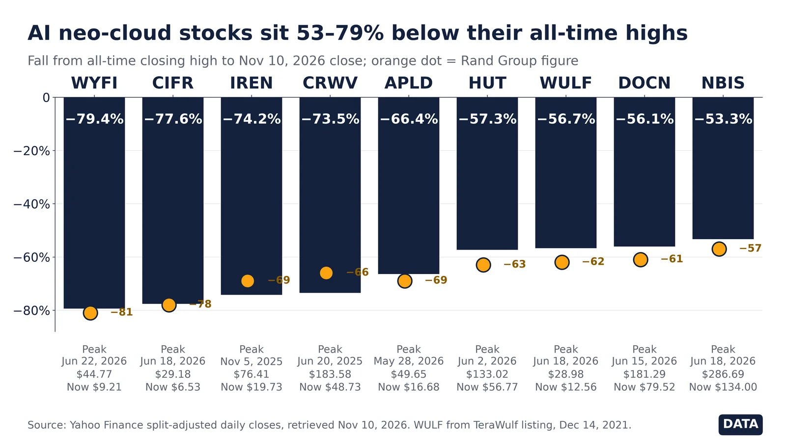

Q8. Neo-cloud Stocks

Nov 10, 2026 close vs all-time closing high: WYFI −79.4%, CRWV −73.5%, NBIS −53.3%. Yahoo Finance.
- Nov 10, 2026 (Data): fall from all-time closing high: WYFI −79.4% (peak Jun 22, 2026), CIFR −77.6% (Jun 18, 2026), IREN −74.2% (Nov 5, 2025), CRWV −73.5% (Jun 20, 2025), APLD −66.4% (May 28, 2026).
- Nov 10, 2026 (Data): HUT −57.3% (peak Jun 2, 2026), WULF −56.7% (Jun 18, 2026), DOCN −56.1% (Jun 15, 2026), NBIS −53.3% (Jun 18, 2026).
- Rand vs TVV (Data): WYFI and CIFR are within 2 pts. Rand understates IREN (−69% vs −74.2%) and CoreWeave (−66% vs −73.5%), and overstates APLD, HUT, WULF, DOCN and NBIS by 3–6 pts. Rand gives no date or method.
- Context (Data): against the Dec 31, 2024 close, the seven names with that history are still up 41% (CIFR) to 384% (NBIS). HUT, WULF, DOCN and NBIS are also up in 2026 so far.
- Timing: CoreWeave’s Q3 results were scheduled after the Nov 10 close, so this chart uses pre-results prices.
- Method: WULF is measured from TeraWulf’s first trading day (Dec 14, 2021). Yahoo’s older WULF prices belong to predecessor IKONICS and would overstate the drop.
Note: Peak-to-now drawdowns make “trade of the decade” look broken, but most of these peaks were short mid-2026 spikes, and longer-run holders are still well ahead. Rand’s nine figures don’t match the closes on any single date, so treat its exact percentages as approximate. This chart predates CoreWeave’s Q3 results, which were scheduled after the Nov 10 close.
Note: Rebuttal: https://finance.yahoo.com/quote/NBIS/history/
Sources: Yahoo Finance CRWV history Yahoo Finance NBIS history Yahoo Finance IREN history Yahoo Finance WYFI history Yahoo Finance CIFR history Yahoo Finance WULF history CoreWeave investor relations Original post: Rand Group, Nov 2026